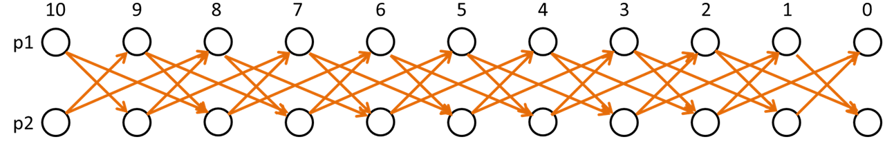
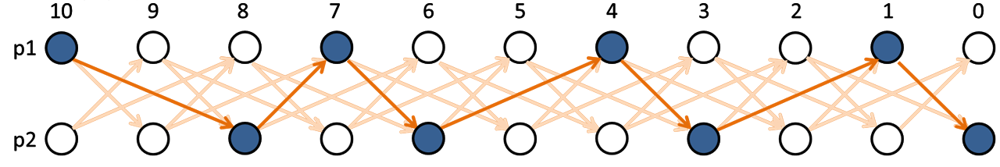

Assignment Description
In this lab you will learn about:
- Using a graph as a state space
- Reinforcement learning
- How to teach a computer how to learn to win the game of Nim
Checking Out The Code
Get the code in the usual way.
From your CS 225 git directory, run the following on EWS:
git fetch release
git merge release/lab_ml -m "Merging initial lab_ml files"
If you’re on your own machine, you may need to run:
git fetch release
git merge --allow-unrelated-histories release/lab_ml -m "Merging initial lab_ml files"
In this lab, you will make use of the Graph class.
- Edges are directed. Adding
insertEdge(u, v)creates directed edgeu -> v.
See the Doxygen for this lab (or check out the file graph.h).
The Game of Nim
The Game of Nim is a simple two player game with only a few rules:
- Each game starts with k tokens on the table
- Starting with Player 1, players alternate turns:
- Each turn, a player may pick up 1 or 2 tokens
- The player who picks up the last token (or tokens) wins
By default, the game usually starts with 10 tokens (k == 10). You should play a few rounds with your lab partner to get an understanding of the game.
Part 1: A State Space for Nim
A state space is a mathematical representation of the state of a physical system. In our case, the physical system is the game of Nim.
At the start of Nim(10), it is Player 1’s turn with 10 tokens available. We can label this state p1-10, for “Player 1 with 10 tokens available”. When Player 1 takes a token, the state is now p2-9 (or, if Player 1 takes two tokens, p2-8).
Each state is a vertex on a graph with directed edges connecting vertices when there is a valid move between the two states. Therefore, the state space with all the valid moves as edges makes the following graph:

Programming NimLearner’s Constructor
Complete the NimLearner constructor, which creates the vertices and edges for the state space of a game of Nim. In creating this graph, make sure to create a weighted graph where all edge weights are initially set to zero (0). We will use these edge weights later for reinforcement learning.
Programming Tips A few tips that may be useful during programming this part:
- You will need to modify/construct strings. There are two popular ways to do this in C++:
- Remember that
std::stringhas an overloadedoperator+. You can “plus” two strings to concatenate the strings together. If you need to convert anintto astd::string,std::to_string(i)will return a string for an inti.- Alternatively, a
std::stringstream ssallows you to build a string with the stream interface using theoperator<<(just likecout). For example,ss<<"p"<<player<<"t"<<tokens;andss.str()can be used to build a string.
- Alternatively, a
- Remember that
- This graph is a directed acyclic graph. You can find an order where you create the vertices before you need to create the edges between them. Which vertex has an out-degree of zero?
A few test cases have been provided for you that you can run using:
./test [part=1]
Part 2: Creating a Series of Choices
One of the most classic methods of machine learning is reinforcement learning. In reinforcement learning, an algorithm is rewarded for making a good choice and punished for making a poor choice. After some training, the algorithm will have a better idea what choices are good and what choices are poor.
To apply reinforcement learning, we need a series of choices. In this lab, our algorithm will learn Nim through examining random paths through the game. For example, one random path Nim(10) is the following:
p1-10 ➜ p2-8 ➜ p1-7 ➜ p2-6 ➜ p1-4 ➜ p2-3 ➜ p1-1 ➜ p2-0
Visually:

Programming playRandomGame
Compelte NimLearner::playRandomGame, which returns a random path through the graph of the state space as a vector<Edge>.
Programming Tips A few tips that may be useful during programming this part:
- The
rand()function returns a random integer between0andRAND_MAX(a very large number). It’s common to userand() % sizeto get a random integer in the range [0,size - 1]. - Every path must start out at
p1-#, where-#is the number of starting tokens, and must end atp_-0, wherep_is the losing player.
A few test cases have been provided for you that you can run using:
./test [part=2]
Part 3: Teaching a Machine to Learn
Finally, we need to apply reinforcement learning. Given a path, we want to reward good decisions. We will define a good decision as all decisions made by the player who won. Therefore, if Player 1 took the last token (as in our example), all choices made by Player 1 is rewarded.
The reward is captured in our algorithm as the edge weight. When we consider a path through the graph, we can find the all edges along a path that has Player 1 winning (eg: the last vertex in the path goes to Player 2 with no tokens remaining, or “p2-0”, meaning that Player 1 took the last token), then all choices made by Player 1 (edges where Player 1 is the source vertex) are rewarded by increasing the edge weight by +1 and all choices made by Player 2 are punished by changing the edge weight by -1.
After one update, several edges will have a weight of 1, several edges will have a weight of -1, though most edges have not been visited and will have their initial weight of 0. After several thousand updates of random games, edges that result in more victories will have increasingly large edge weights.
Programming updateEdgeWeights
Complete NimLearner::updateEdgeWeights, which updates the edge weights along a given path on the graph of the state space.
Programming Tips A few tips that may be useful during programming this part:
- The
Graphclass returns a copy of theEdgestructure, not the original one! Therefore, updating theEdge::weightproperty of the edge does not update the edge weight (eg: you can think of it as read-only). - Instead,
Graph::setEdgeWeightshould be used to update the edge weight of a given edge.
Putting it Together
A main.cpp is provided that plays 10,000 random games of Nim(10) and provides an output of the state space at the end. You can run this game by:
./lab_ml
Looking at the results, you should be able to answer several questions:
- When there’s exactly two tokens left, what should Player 1 do? What are the edge weights of the out edges of
p1-2andp2-2? - When there are four tokens left, what can Player 2 do? What are the edge weights out of
p1-4andp2-4? - Is
p1-10orp2-9a better spot to be in? - Would you prefer to go first or second in Nim(10)?
Grading Information
The following files are used for grading this lab:
NimLearner.hNimLearner.cpp
If you modify any other files, they will not be grabbed for grading and you may end up with a “stupid zero.”